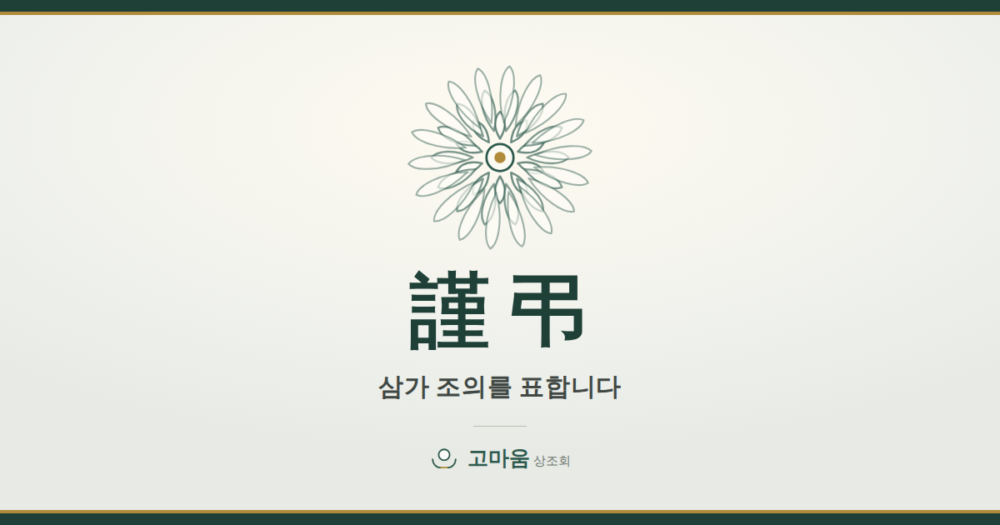

무료 도구 · 누구나
모바일 부고장
청첩장처럼 링크 하나로 보냅니다. 받은 분은 빈소 위치와 발인 시각을 보고, 그 자리에서 전화를 걸거나 길을 찾을 수 있습니다. 긴 문자보다 읽기 쉽고, 조문객이 다시 물어보는 일이 줄어듭니다.
서버에 저장되지 않습니다
입력하신 내용은 링크 주소 안에 담깁니다. 주소의 # 뒤쪽은 인터넷 규약상 서버로 전송되지 않기 때문에, 고인과 가족의 정보가 저희에게 오지 않습니다. 저장할 곳이 없으니 유출될 곳도 없습니다.
다만 링크를 받은 사람은 누구나 볼 수 있습니다. 청첩장과 같습니다. 그래서 계좌번호 항목을 두지 않았습니다.
만들어진 링크
이 주소를 문자나 카카오톡으로 보내시면 됩니다. 항목을 고치면 링크도 함께 바뀝니다.
카카오톡에서 보이는 미리보기
링크를 카카오톡에 붙이면 아래 카드가 먼저 뜨고, 누르면 부고장이 열립니다.

미리보기 카드에는 고인의 성함이 나오지 않습니다. 카드 문구를 부고마다 다르게 하려면 서버가 필요한데, 이 도구는 서버에 아무것도 보내지 않는 방식이라 그렇습니다. 대신 단톡방 목록이나 잠금화면 알림에 고인 성함이 노출되지 않는다는 이점이 있습니다.
보내기 전에
빈소와 발인 시각이 확정된 뒤에 보내세요. 미확정 상태로 보내면 링크를 다시 만들어 두 번 보내게 됩니다. 문자용 짧은 문안이 필요하시면 부고 쓰기에서 만드실 수 있습니다.
받는 분에게는 이렇게 보입니다
아래는 실제 부고장 화면입니다. 위 항목을 채우면 그대로 반영됩니다.
사랑하는 이와 이별하는 순간, 고마움 상조회가 함께하겠습니다.